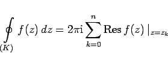
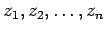
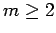
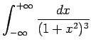

Inhalt Index DeskTop Bronstein

 Funktionentheorie Berechnung reeller Integrale durch Integration im Komplexen
Funktionentheorie Berechnung reeller Integrale durch Integration im Komplexen


Mit Hilfe des Residuensatzes mit der Integrationsformel
|  | (14.57a) |
können eine Reihe bestimmter Integrale von Funktionen einer Veränderlichen berechnet werden. Wenn f(z) eine Funktion ist, die in der gesamten oberen Halbebene einschließlich der reellen Achse analytisch ist, ausgenommen die singulären Punkte , die oberhalb der reellen Achse liegen sollen (s. Abbildung),
und wenn die Null eine Wurzel der Gleichung f(1/z) =0 von der Vielfachheit  ist, dann gilt:
| Beispiel |
|
Berechnung des Integrals . |